Image 1 of 1: ‘Empirical cumulative distribution function for height.’
Empirical cumulative distribution function for height.
Figure 3
Plotting these heights as
bars is what we call a histogram. It is a more useful plot
because we are usually more interested in intervals, such and such
percent are between 70 inches and 71 inches, etc., rather than the
percent less than a particular height. Here is a histogram of
heights:
Figure 4
Image 1 of 1: ‘Histogram for heights.’
Histogram for heights.
Figure 5
Note that the X is
now capitalized to distinguish it as a random variable and that the
equation above defines the probability distribution of the random
variable. Knowing this distribution is incredibly useful in science. For
example, in the case above, if we know the distribution of the
difference in mean of mouse weights when the null hypothesis is true,
referred to as the null distribution, we can compute the
probability of observing a value as large as we did, referred to as a
p-value. In a previous section we ran what is called a
Monte Carlo simulation (we will provide more details on Monte
Carlo simulation in a later section) and we obtained 10,000 outcomes of
the random variable under the null hypothesis.
Figure 6
Image 1 of 1: ‘Null distribution with observed difference marked with vertical red line.’
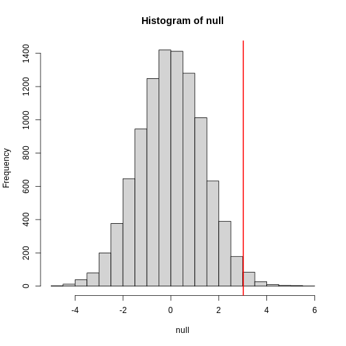
Null distribution with observed difference marked with vertical red
line.
Image 1 of 1: ‘Does mean of Y less mean of X equal zero?’
We can even compare
more than two means. The three normal curves below help to visualize a
question comparing the means of each curve to one of the others.
Figure 2
Image 1 of 1: ‘Normal curves with different means and standard deviations’
Image 1 of 1: ‘Quantile versus quantile plot of simulated differences versus theoretical normal distribution for four different sample sizes.’
Quantile versus quantile plot of simulated differences versus
theoretical normal distribution for four different sample sizes.
Figure 2
Image 1 of 1: ‘Quantile versus quantile plot of simulated ratios versus theoretical normal distribution for four different sample sizes.’
Quantile versus quantile plot of simulated ratios versus theoretical
normal distribution for four different sample sizes.
Figure 3
The result above tells us the distribution of the following random
variable: What does the CLT tell us is the mean
of Z (you don’t need code)?
Figure 4
Now we introduce the concept of a null hypothesis. We don’t know
μx nor μy. We want to quantify what
the data say about the possibility that the diet has no effect:
μx = μy. If we use CLT, then we approximate
the distribution of X̄ as normal with mean μX and
standard deviation σX and the distribution of Ȳ as
normal with mean μY and standard deviation
σY. This implies that the difference Ȳ - X̄ has mean 0.
We described that the standard deviation of this statistic (the standard
error) is and that we estimate the
population standard deviations σX and
σY with the sample estimates. What is the estimate of
Image 1 of 1: ‘We show 250 random realizations of 95% confidence intervals. The color denotes if the interval fell on the parameter or not.’
We show 250 random realizations of 95% confidence intervals. The color
denotes if the interval fell on the parameter or not.
Figure 4
Image 1 of 1: ‘We show 250 random realizations of 95% confidence intervals, but now for a smaller sample size. The confidence interval is based on the CLT approximation. The color denotes if the interval fell on the parameter or not.’
We show 250 random realizations of 95% confidence intervals, but now for
a smaller sample size. The confidence interval is based on the CLT
approximation. The color denotes if the interval fell on the parameter
or not.
Figure 5
Image 1 of 1: ‘We show 250 random realizations of 95% confidence intervals, but now for a smaller sample size. The confidence is now based on the t-distribution approximation. The color denotes if the interval fell on the parameter or not.’
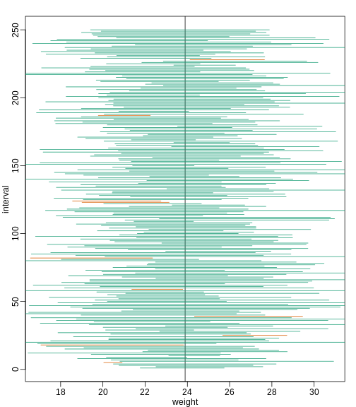
We show 250 random realizations of 95% confidence intervals, but now for
a smaller sample size. The confidence is now based on the t-distribution
approximation. The color denotes if the interval fell on the parameter
or not.
Figure 6
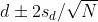 with
Figure 7
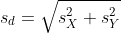
Figure 8
or
Figure 9
This suggests that either
Figure 10
or
Figure 11
This then implies that the
t-statistic is more extreme than 2, which in turn suggests that the
p-value must be smaller than 0.05 (approximately, for a more exact
calculation use qnorm(.05/2) instead of 2). The same
calculation can be made if we use the t-distribution instead of CLT
(with qt(.05/2, df = 2 * N-2)). In summary, if a 95% or 99%
confidence interval does not include 0, then the p-value must be smaller
than 0.05 or 0.01 respectively.
Image 1 of 1: ‘Null distribution showing type I error as alpha’
Figure 2
Image 1 of 1: ‘Alternative hypothesis showing type II error as beta’
Figure 3
Figure 4
Image 1 of 1: ‘Power plotted against sample size.’
Power plotted against sample size.
Figure 5
Image 1 of 1: ‘Power plotted against cut-off.’
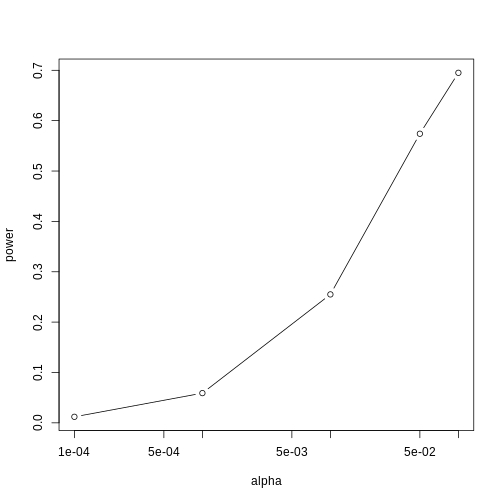
Power plotted against cut-off.
Figure 6
Image 1 of 1: ‘p-values from random samples at varying sample size. The actual value of the p-values decreases as we increase sample size whenever the alternative hypothesis is true.’
p-values from random samples at varying sample size. The actual value of
the p-values decreases as we increase sample size whenever the
alternative hypothesis is true.
Image 1 of 1: ‘Histogram of 1000 Monte Carlo simulated t-statistics.’
Histogram of 1000 Monte Carlo simulated t-statistics.
Figure 2
Image 1 of 1: ‘Quantile-quantile plot comparing 1000 Monte Carlo simulated t-statistics to theoretical normal distribution.’
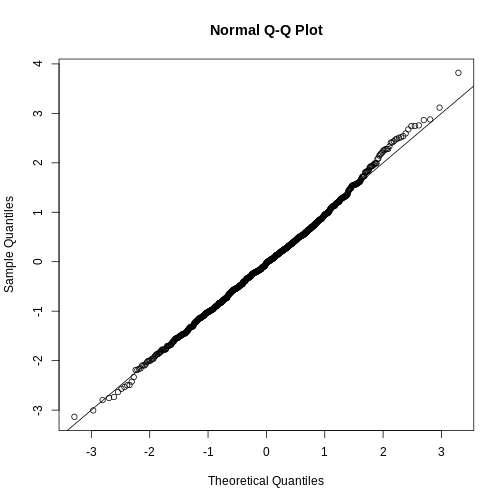
Quantile-quantile plot comparing 1000 Monte Carlo simulated t-statistics
to theoretical normal distribution.
Figure 3
Image 1 of 1: ‘Quantile-quantile plot comparing 1000 Monte Carlo simulated t-statistics with three degrees of freedom to theoretical normal distribution.’
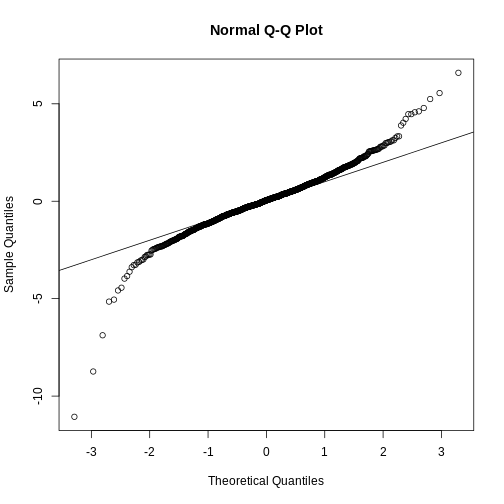
Quantile-quantile plot comparing 1000 Monte Carlo simulated t-statistics
with three degrees of freedom to theoretical normal distribution.
Figure 4
Image 1 of 1: ‘Quantile-quantile plot comparing 1000 Monte Carlo simulated t-statistics with three degrees of freedom to theoretical t-distribution.’
Quantile-quantile plot comparing 1000 Monte Carlo simulated t-statistics
with three degrees of freedom to theoretical t-distribution.
Figure 5
Image 1 of 1: ‘Quantile-quantile of original data compared to theoretical quantile distribution.’
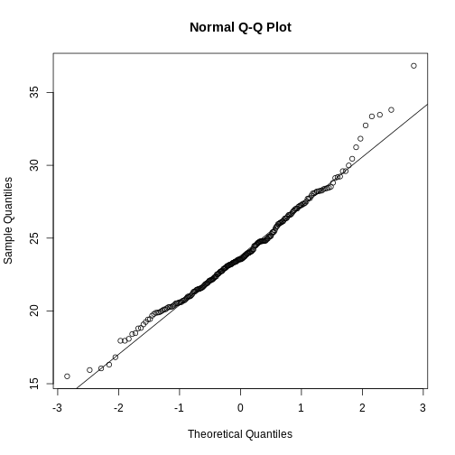
Quantile-quantile of original data compared to theoretical quantile
distribution.
Image 1 of 1: ‘Treatment data and control data shown with a boxplot.’
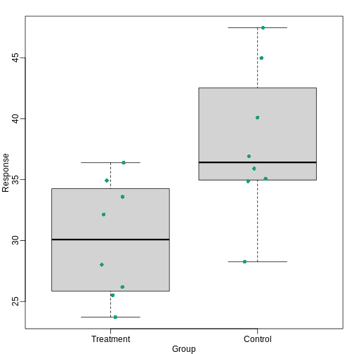
Treatment data and control data shown with a boxplot.
Figure 7
Image 1 of 1: ‘Bar plots with outliers.’
Figure 8
Image 1 of 1: ‘Data and boxplots for original data (left) and in log scale (right).’
Data and boxplots for original data (left) and in log scale (right).
Figure 9
Image 1 of 1: ‘The plot on the left shows a regression line that was fitted to the data shown on the right. It is much more informative to show all the data.’
The plot on the left shows a regression line that was fitted to the data
shown on the right. It is much more informative to show all the data.
Figure 10
Image 1 of 1: ‘Gene expression data from two replicated samples. Left is in original scale and right is in log scale.’
Gene expression data from two replicated samples. Left is in original
scale and right is in log scale.
Figure 11
Image 1 of 1: ‘MA plot of the same data shown above shows that data is not replicated very well despite a high correlation.’
MA plot of the same data shown above shows that data is not replicated
very well despite a high correlation.
Figure 12
Image 1 of 1: ‘Barplot for two variables.’
Figure 13
Image 1 of 1: ‘For two variables a scatter plot or a 'rotated' plot similar to an MA plot is much more informative.’
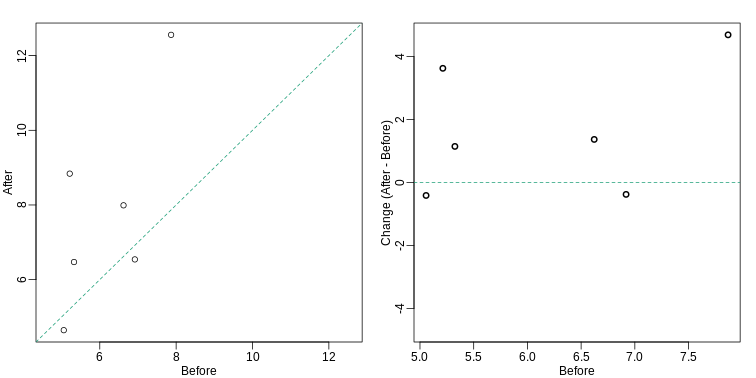
For two variables a scatter plot or a ‘rotated’ plot similar to an MA
plot is much more informative.
Figure 14
Image 1 of 1: ‘Another alternative is a line plot. If we don't care about pairings, then the boxplot is appropriate.’
Another alternative is a line plot. If we don’t care about pairings,
then the boxplot is appropriate.
Figure 15
Image 1 of 1: ‘Gratuitous 3-D.’
Figure 16
Image 1 of 1: ‘This plot demonstrates that using color is more than enough to distinguish the three lines.’
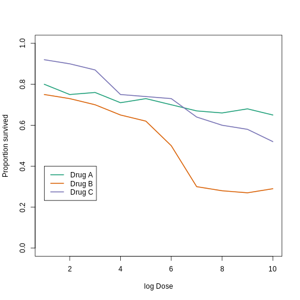
This plot demonstrates that using color is more than enough to
distinguish the three lines.
Figure 17
Image 1 of 1: ‘Ignoring important factors.’
Figure 18
Image 1 of 1: ‘Because dose is an important factor, we show it in this plot.’
Because dose is an important factor, we show it in this plot.


 Plotting these heights as
bars is what we call a histogram. It is a more useful plot
because we are usually more interested in intervals, such and such
percent are between 70 inches and 71 inches, etc., rather than the
percent less than a particular height. Here is a histogram of
heights:
Plotting these heights as
bars is what we call a histogram. It is a more useful plot
because we are usually more interested in intervals, such and such
percent are between 70 inches and 71 inches, etc., rather than the
percent less than a particular height. Here is a histogram of
heights:
 Note that the X is
now capitalized to distinguish it as a random variable and that the
equation above defines the probability distribution of the random
variable. Knowing this distribution is incredibly useful in science. For
example, in the case above, if we know the distribution of the
difference in mean of mouse weights when the null hypothesis is true,
referred to as the null distribution, we can compute the
probability of observing a value as large as we did, referred to as a
p-value. In a previous section we ran what is called a
Monte Carlo simulation (we will provide more details on Monte
Carlo simulation in a later section) and we obtained 10,000 outcomes of
the random variable under the null hypothesis.
Note that the X is
now capitalized to distinguish it as a random variable and that the
equation above defines the probability distribution of the random
variable. Knowing this distribution is incredibly useful in science. For
example, in the case above, if we know the distribution of the
difference in mean of mouse weights when the null hypothesis is true,
referred to as the null distribution, we can compute the
probability of observing a value as large as we did, referred to as a
p-value. In a previous section we ran what is called a
Monte Carlo simulation (we will provide more details on Monte
Carlo simulation in a later section) and we obtained 10,000 outcomes of
the random variable under the null hypothesis. We can even compare
more than two means. The three normal curves below help to visualize a
question comparing the means of each curve to one of the others.
We can even compare
more than two means. The three normal curves below help to visualize a
question comparing the means of each curve to one of the others.


 What does the CLT tell us is the mean
of Z (you don’t need code)?
What does the CLT tell us is the mean
of Z (you don’t need code)? and that we estimate the
population standard deviations σX and
σY with the sample estimates. What is the estimate of
and that we estimate the
population standard deviations σX and
σY with the sample estimates. What is the estimate of


 This suggests that either
This suggests that either or
or This then implies that the
t-statistic is more extreme than 2, which in turn suggests that the
p-value must be smaller than 0.05 (approximately, for a more exact
calculation use
This then implies that the
t-statistic is more extreme than 2, which in turn suggests that the
p-value must be smaller than 0.05 (approximately, for a more exact
calculation use 


 Even worse than pie charts are donut plots.
Even worse than pie charts are donut plots.